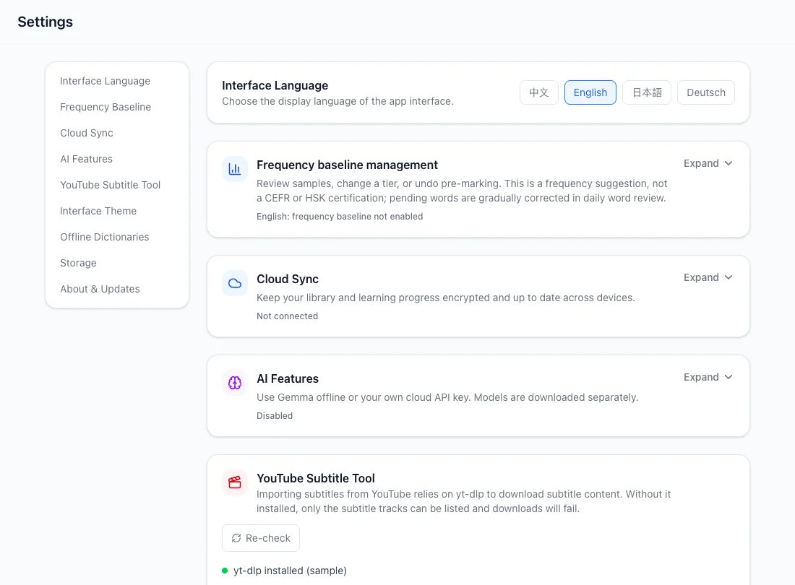
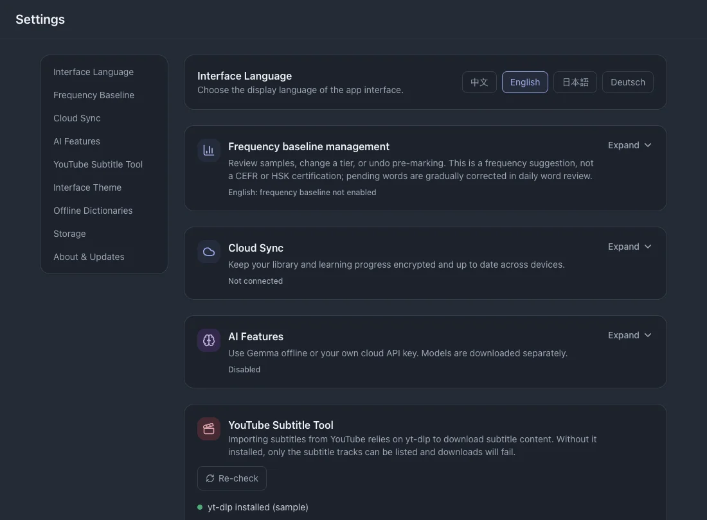

Settings
Configure the installed app here. Optional online features are separate from local reading, lookup and review.
On this page
Interface language
Choose English, Chinese, Japanese or German in Settings. This changes buttons and labels, not the language of your imported subtitles.



Frequency baseline
- Expand the frequency section and choose English or Chinese.
- Choose a range from 1,000 to 10,000 words, preview it and apply the range you already know.
- Use the undo entry if you want to withdraw the baseline; read its confirmation before proceeding.
Cloud sync
Sync is optional and needs an internet connection. Learning records are encrypted before transfer; keep the recovery code when it is issued.
- Expand Cloud sync and register or sign in.
- Use the same account on your other device, then synchronize and inspect the status. Automatic sync can be enabled separately.
See alsoBack up and restore
AI analysis
- Enable AI and choose local Gemma or a cloud API.
- For local AI, download or import a compatible model and select it. Model download needs internet; local inference works after the model is ready.
- For cloud AI, configure the service address, your API key and model, then check the connection. Selected text is sent to that provider.
See alsoUnderstand context and phrases
YouTube import
Check the tool status in this section. Desktop setup can require yt-dlp and its runtime dependencies; follow the platform-specific instructions shown by the app.
Browser-session options are optional and depend on the platform. Use them only when the source requires an authenticated session.
See alsoGet YouTube subtitles
Theme
Choose ocean, sage, twilight, amber or midnight. The theme changes the app’s appearance without changing learning data.
Dictionaries
- Expand Dictionaries to inspect installed sources and supported languages.
- Import a compatible dictionary pack when needed. Removing an imported source changes available definitions; read the deletion confirmation.
Storage
Expand Storage to see the space used by app data and its components. Export a backup before making destructive changes to your library.
See alsoBack up and restore
App updates
Check for updates in Settings. When an update is available, follow the installation or download action offered on your platform.